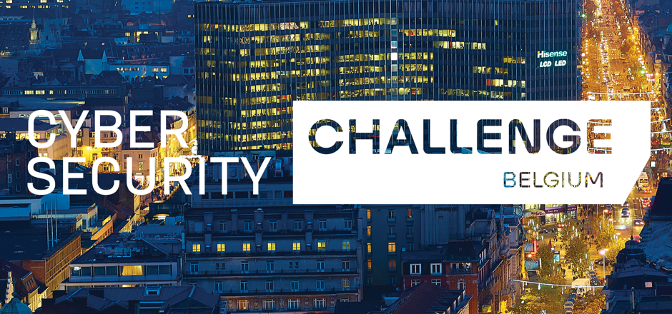
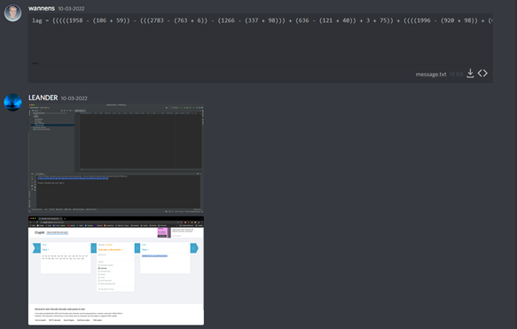
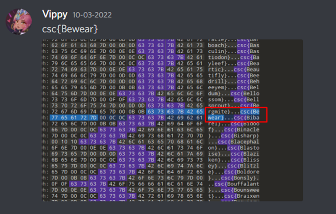
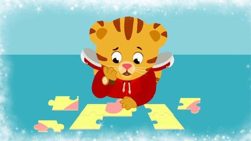
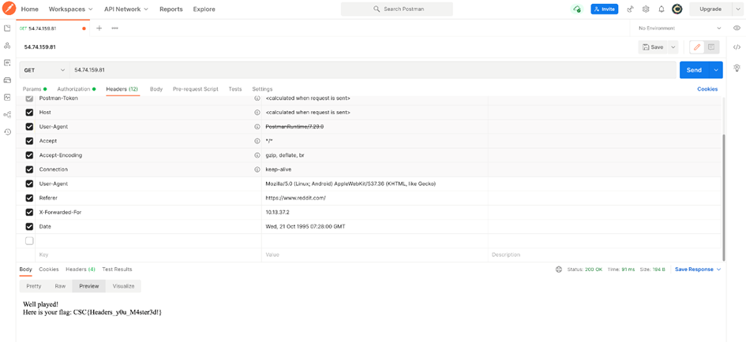
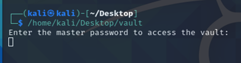

Innovatieroute Digital Quality
De Cyber Security Challenge is een jaarlijks georganiseerde hackaton. Het doel van deze challenge is zoveel mogelijk punten scoren in de eerste ronde om zo een plaats te bemachtigen in de finale, waar grote prijzen gewonnen kunnen worden. Je kan punten verdienen door op heel wat verschillende manieren gebreken in de beveiliging te zoeken.
Het doel van mijn deelname was nieuwe kennis opdoen over cybersecurity. Ik vind cybersecurity een interessant gegeven en was benieuwd om te ontdekken wat er allemaal achter schuilde.
Voor deze hackaton werkte ik in team, samen met Leander Winters, Vicky Bieghs en Arne Demandt. Dit zijn drie studenten die samen met mij toegepaste informatica studeren met als afstudeerrichting softwaremanagement.


De hackaton spreidde zich over twee dagen. De eerste dag kwam ik met mijn team samen via het online platform Discord. We namen het op tegen 252 andere teams in de online kwalificaties. Hierna mochten de 40 hoogst scorende teams door naar de finale.
De cybersecurity challenge had ook een eigen Discord-kanaal waarin deelnemers vragen stelden en de beheerders tips vrijgaven of updates aankondigden.
In ons privékanaal bespraken we wie welke challenge probeerde op te lossen. Soms werkte we als team aan een uitdaging in de hoop het goede antwoord te vinden.
Al snel konden we enkele van de eenvoudige challenges oplossen. Wanneer een challenge correct wordt opgelost krijg je een flag te zien, zoals hieronder te zien is.
Wanneer we met een bepaald commando een tekstbestand inlazen, en dit daarna grondig doorzochten, merkte we dat er een flag verborgen zat tussen de willekeurige gegevens.
Door een opdracht succesvol op te lossen en deze flag op het platform in te voeren scoorden we punten en bemachtigden we een positie in de ranglijst.
Daarnaast waren er heel wat verschillende soorten challenges. Enkele voorbeelden zijn: reverse engineering, forensische opdrachten, encryptie…


Sommige onderdelen waren eenvoudiger dan andere. Nadat we de
meeste eenvoudige challenges hadden opgelost hebben we nog een lange tijd geprobeerd om nieuwe uitdagingen op te lossen. Dit had uiteraard niet altijd even veel succes. Soms zaten we uren naar hetzelfde bestand te staren of tientallen keren hetzelfde opnieuw te proberen. In sommige gevallen bracht onze volharding succes. Maar soms gingen er ook uren voorbij zonder progressie.
Na afloop van de eerste dag stonden we, naar ons gevoel, nog op een redelijke positie in de ranglijst. Zeker omdat we wisten dat wij helemaal geen uitgebreide achtergrond hadden in de cybersecurity-wereld. We zijn ook studenten softwaremanagement, en hebben dus niet de programmeer- of netwerk-skills die andere studenten mogelijks wel hebben.
Bij de start van de tweede dag kwamen we opnieuw samen met ons team via Discord. We bespraken wat de mogelijkheden waren en of er nog uitdagingen waren die we met ons allen konden oplossen.
Elke student waagde zich aan een andere challenge. Na een hele hoop speurwerk zijn we er toch nog in geslaagd om de tweede dag enkele challenges op te lossen.
Ook zijn er challenges waar we heel dicht bij de oplossing waren, maar zonder verder succes.
Zo sloten we de tweede en laatste dag van de hackaton af. We eindigden met een score van 300 punten en bemachtigden de 148ste plaats. Aangezien er 253 deelnemers waren, vonden we dat we ons best hadden gedaan.
Ik vind dat we als team goed ons best hebben gedaan om te kunnen oplossen wat we konden. We hebben ons twee dagen lang ingezet om een zo hoog mogelijke score te behalen en zoveel mogelijk uitdagingen te voltooien.

